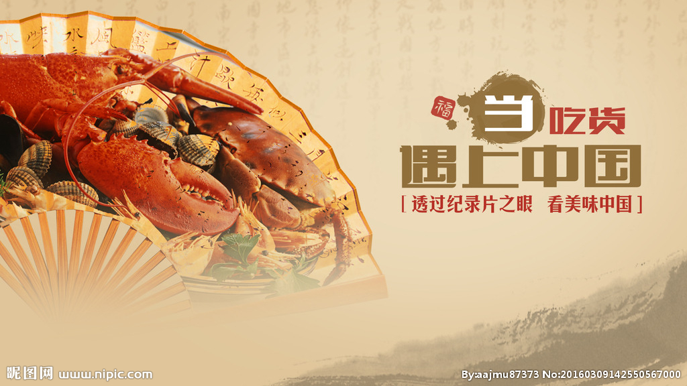
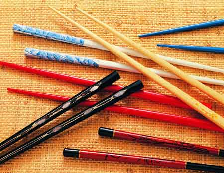
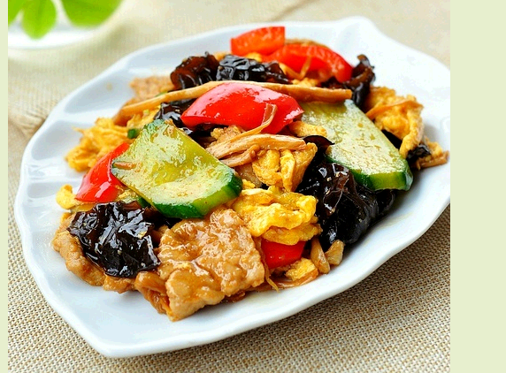
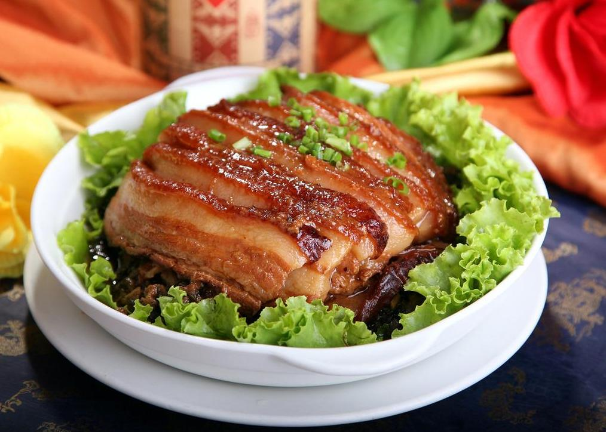

美味中国
中式餐厅
中式餐厅的设计，离不开桌、椅、条案、柜子这些基本元素。
桌：中式餐厅中的桌子一般呈方形或长方形，以体现用餐人之间的尊卑等级关系。依据大、中、小三种规格，分别称为“八仙”、“六仙”、“四仙”，“仙”指人数，取其吉祥之意。
中式餐具
中式餐具是一种极具中华文化风格特色的餐具，现在的中式餐具一般分为古典风格和现代风格，它们各具特色。

中式餐具的简单介绍
中式餐具的碗碟一般采用的是瓷器或陶器，具有清透、柔和、别致的高贵之感，用于家庭餐厅中具有提升居室空间档次的作用。素雅的图案配上精致的造型，俨然是令人赏心悦目的工艺品，是一种环保性高的餐具用品。本百科将通过中式餐具有哪些、中式餐具摆放、中式餐具品牌、中式餐具图片等方面介绍中式餐具。
今日美食介绍
中国菜肴素有四大风味和八大菜系之说。四大风味是：鲁、川、粤、淮扬。八大菜系一般是指：山东菜、四川菜、湖南菜、江苏菜、浙江菜、安徽菜、广东菜和福建菜。
-
 木须肉北京菜、东北菜，号称“肉蛋同炒
不成功便成仁”的北方家常菜经典，南方很少见或口味原料很不同。主要原料，猪瘦肉，鸡蛋，干木耳，黄瓜，油菜。此菜含有丰富优质蛋白，脂肪、胆固醇较少，一般人群均可适量食用。油菜富含维生素A，木耳含丰富的钙，磷。 -
 梅菜扣肉，也称为咸烧白，是特色传统名菜，属粤菜客家菜
其中以广东梅州最具代表性（梅菜扣肉的真实出处应该来源于川菜，在四川传统筵席菜中咸烧白（梅菜扣肉）和甜烧白刚好组成一对菜）。通常是将五花肉上汤锅煮透，加老抽，油炸上色，再切成肉片。之后加葱、姜等调料炒片刻，再下汤用小火焖烂，五花肉盛入碗里，上铺梅菜段，倒入原汤蒸透。走菜时，把肉反扣在盘中。成菜后，肉烂味香，吃起来咸中略带甜味，肥而不腻。